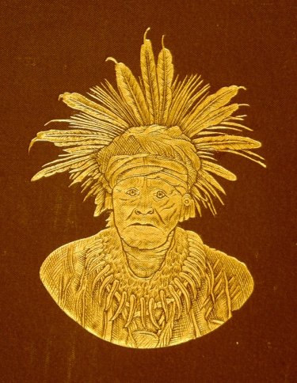
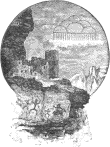

The two “Accompanying Papers” that make up the bulk of this book are also available as individual texts from Project Gutenberg:
Victor Mindeleff, A Study of Pueblo Architecture, Tusayan and Cibola: e-text 19856.
James Stevenson, The Ceremonial of Hasjelti Dailjis and Mythical Sand Painting of the Navajo Indians: e-text 19331.
The files are identical except that in the present text a few more typographical errors have been corrected, and some illustrations have been replaced.
A few words in these two papers use some uncommon letters:
ā, ē (vowel with macron or “long” mark)
Ĕ, ĭ, ŏ (vowel with breve or “short” mark)
ⁿ (small raised n).
These words include alternate transcriptions as mouse-hover popups: Tanā’shkiji. Errors are similarly marked. The “cents” sign ¢ has been used in place of the rare symbols Ȼ and ȼ.
If the apostrophes and quotation marks in this paragraph appear as garbage, you may need to change your browser’s “file encoding” or “character set” to utf-8 (unicode), or change your browser’s default font.
All brackets and parenthetical question marks are in the original. The cover picture is conjectural; it was used in Annual Reports 7, 9 and others.


IV
This article is in a separate file. As in the printed original, it includes a duplicate table of contents and list of illustrations; the Index was added by the transcriber.
This article is in a separate file. As in the printed original, it includes a duplicate table of contents and list of illustrations; the Index was added by the transcriber.
Plates I-CXI and Figures 1-114 accompany Pueblo Architecture; the remaining Plates and Figures accompany Hasjelti Dailjis. Each article is in a separate file.
Smithsonian Institution,
Bureau of Ethnology,
Washington, D.C., October 1, 1887.
Sir: I have the honor to submit my Eighth Annual Report as Director of the Bureau of Ethnology.
The first part presents an explanation of the plan and operations of the Bureau; the second consists of a series of papers on anthropologic subjects, prepared by my assistants to illustrate the methods and results of the work of the Bureau.
I desire to express my thanks for your earnest support and your wise counsel relating to the work under my charge.
I am, with respect, your obedient servant,
Prof. S. P. Langley,
Secretary of the Smithsonian
Institution.
The prosecution of research among the North American Indians, as directed by act of Congress, was continued during the fiscal year 1886-’87.
The general plan upon which the work has been prosecuted has been explained in former reports and has not been changed. After certain lines of investigation had been decided upon, they were confided to persons trained in their pursuit, with the intention that the results of their labors, when completed or well advanced, should be presented from time to time in the publications of the Bureau provided for by law. A brief statement of the work upon which each one of the special students was actively engaged during the fiscal year is furnished below, but this statement does not embrace all the studies undertaken or services rendered by them, since particular lines of research have been suspended in this, as in former years, in order to prosecute unto substantial completeness work regarded as of paramount importance. From this cause delays have been occasioned in the completion of several treatises and monographs, already partly in type, which otherwise would have been published.
Invitation is renewed for the assistance of explorers, writers, and students who are not and may not desire to be officially connected with the Bureau. Their contributions, whether in XVIII the shape of suggestions or of extended communications, will be gratefully acknowledged, and will always receive proper credit if published either in the series of reports or in monographs or bulletins, as the liberality of Congress may in future allow.
The items now reported upon are presented in three principal divisions. The first relates to the publication made; the second, to the work prosecuted in the field; and the third, to the office work, which largely consists of the preparation for publication of the results of field work, with the corrections and additions obtained from the literature relating to the subjects discussed and by correspondence.
The only publication actually issued during the year was the Fourth Animal Report of the Bureau of Ethnology to the Smithsonian Institution, 1882-’83. It is an imperial octavo volume of lxiii + 532 pages, illustrated by 83 plates, of which 11 are colored, and 564 figures in the text. The official report of the Director, occupying 39 pages (pp. xxv-lxiii), is accompanied by the following papers:
Pictographs of the North American Indians, a preliminary paper, by Garrick Mallery; pp. 3-256, Pls. I-LXXXIII, Figs. 1-209.
Pottery of the Ancient Pueblos, by William H. Holmes; pp. 257-360, Figs. 210-360.
Ancient Pottery of the Mississippi Valley, by William H. Holmes; pp. 361-436, Figs. 361-463.
Origin and Development of Form and Ornament in Ceramic Art, by William H. Holmes; pp. 437-465, Figs. 464-489.
A Study of Pueblo Pottery, as illustrative of Zuñi culture growth, by Frank Hamilton Cushing; pp. 467-521, Figs. 490-564.
The field work of the year is divided into (1) mound explorations and (2) general field studies, embracing those relating to social customs, institutions, linguistics, pictography, and other divisions of anthropology.
XIXThe work of exploring the mounds of the eastern United States was, as in previous years, under the charge of Prof. Cyrus Thomas.
Although Prof. Thomas and his assistants have devoted a large portion of the year to the study of the collections made in the division of mound exploration and to the preparation of a report of its operations for the last five years, yet some field work of importance has been done.
Prof. Thomas in person examined the more important ancient works of New York and Ohio. He gave special attention to the latter, with a view of determining where new and more accurate descriptions, surveys, and illustrations were necessary. It was found requisite to undertake a careful resurvey and description of a number of the well known works in Ohio. This reexamination was the more necessary in view of the light shed on the origin and use of these monuments by the explorations which had been carried on in West Virginia, western North Carolina, and eastern Tennessee.
Mr. J. P. Rogan continued his work as assistant until the close of November, when he voluntarily resigned his position to enter upon other engagements. A portion of his time during the first month was occupied in arranging and preparing for shipment the collection purchased of Mrs. McGlashan, in Savannah, Georgia. The rest of his time was employed in exploring mounds along the upper Savannah River in Georgia and South Carolina and along the lower Yazoo River in Mississippi.
Mr. J. W. Emmert continued to act as field assistant until the end of February, when the field work closed. His labors, with the exception of a short visit to central New York, were confined to eastern Tennessee, chiefly Blount, Monroe, and Loudon counties, where numerous extensive and very interesting groups are found in the section formerly occupied by the Cherokees. Prof. Thomas thought it necessary to devote considerable attention to the ancient works of that region, as it is XX probable that there and in western North Carolina is to be found the key that will materially assist in solving the problem of the peculiar works of Ohio. The results of these explorations are of unusual interest, independent of their supposed bearing on the Ohio mounds.
Mr. James D. Middleton, who has been a constant assistant in the division since its organization, after completing some investigations begun in southern Illinois, visited western Kentucky for the purpose of investigating the works of that section, but was soon afterwards called to Washington to take part in the office work. During the month of June he visited and made a thorough survey of the extensive group of works near Charleston, West Virginia, of which Colonel Norris had made a partial exploration, the latter having been prevented from completing it by the sickness which immediately preceded his death. During the same month Mr. Middleton commenced the survey of the Ohio works before alluded to, obtaining some valuable results in the short time before the close of the year.
Mr. Gerard Fowke was also engaged for a short time in field work in western Pennsylvania, Ohio, and Kentucky, but was called early in autumn to Washington to assist in office work.
During October and December Mr. Albert S. Gatschet was engaged in gathering historic and linguistic data in Louisiana, Texas, and the portion of Mexico adjoining the Rio Grande, which region contains the remnants of a number of tribes whose language and linguistic affinity are practically unknown. After a long search Mr. Gatschet found a small settlement of Biloxi Indians at Indian Creek, five or six miles west of Lecompte, Rapides Parish, Louisiana, where they gain a livelihood as day laborers. Most of them speak English more than their native tongue; in fact, about two-thirds of the thirty-two survivors speak English only. The vocabulary obtained by him discloses the interesting fact that the Biloxi belong to the Siouan linguistic family.
XXIHe heard of about twenty-five of the Tunika tribe still living in their old homes on the Marksville Prairie, Avoyelles Parish, Louisiana. An excellent vocabulary was obtained of their language at Lecompte, Louisiana, and a careful comparison of this with other Indian languages shows that the Tunika is related to none, but represents a distinct linguistic family. He was unable to collect any information in regard to the Karankawa tribe, concerning which little is known except that they lived upon the Texan coast near Lavaca Bay.
Leaving Laredo County, Texas, he visited Camargo, in Tamaulipas, Mexico, finding near San Miguel the remnants of the Comecrudo tribe, or, as they are called by the whites, Carrizos. Only the older men and women still remember their language. The full-blood Comecrudos seen were tall and thin, some of them with fairer complexions than the Mexicans. Subsequently the Cotoname language, formerly spoken in the same district, was studied and found to be a distinctly related dialect of Comecrudo. Both of them belong to the Coahuiltecan family. From the Comecrudo Mr. Gatschet obtained the names of a number of extinct tribes which formerly lived in their vicinity, but of which no representatives are left. These are the Casas Chiquitas, Tejones (or “Raccoons”), Pintos or Pakawas, Miakkan, and Cartujanos. He next visited the Tlaskaltec Indians, who live in the city of Saltillo. Of these Indians about two hundred still speak their own language, which is almost identical with the Aztec, although largely mixed with Spanish.
Mr. Jeremiah Curtin was engaged from the middle of March to June 1 in completing investigations begun the previous year into the history, myths, and language of the Iroquois Indians at Versailles, Cattaraugus County, New York. The material obtained by him is of great interest and value.
Dr. W. J. Hoffman proceeded early in August to Paint Rock, North Carolina, to secure sketches of pictographs upon the canyon walls of the French Broad River near that place. XXII Owing to disintegration of the sandstone rocks, the painted outlines of animals and other figures are becoming slowly obliterated, though sufficient remained to show their similarity to others in various portions of the region which it is believed was occupied by the Cherokee Indians. Similar outlines were reported to have been formerly visible on the same river, as well as on the Tennessee, near Knoxville, Tennessee, though no traces of them were found.
The next place visited was a few miles distant from and northwest of Liberty, Tazewell County, Virginia, where some painted characters still remain in a good state of preservation. They are on the sandstone cliffs near the summit of the mountains and consist of human figures, birds, and other forms, appearing to resemble artistically those of North Carolina. Five miles eastward, on the same range, is a single diamond-shaped cluster of red and black marks, no other forms being visible. This rock is known in the surrounding country as the “Handkerchief Rock,” because of its resemblance to an outspread colored handkerchief. He then proceeded to Charleston, West Virginia, obtaining copies of petroglyphs on Big Horse Creek, 12 miles southwest of that place, and at several points along the Kanawha River. It was learned that 20 miles south of Charleston, on the reputed trail leading from the Kanawha Valley into Kentucky, “painted trees” formerly marked the direction of the trails leading into the Cherokee country, and into Kentucky. These trees bore various marks in red, but no accurate information pertaining to the precise form of the characters could be ascertained. At the other points mentioned characters were noticed resembling in general those found in other portions of the Eastern and Middle States known to have been occupied by tribes of the Algonquian linguistic family.
The “Indian God-Rock,” 115 miles north of Pittsburg, Pennsylvania, on the Alleghany River, was next examined and sketches were made of the figures. This rock is an immense bowlder, the sculptured face of which is about 15 feet high and from 8 to 10 feet broad, and lies at the water’s edge. The figures upon the lower surface are being gradually XXIII obliterated by erosion from floating logs and driftwood during seasons of high water, while those upon the upper portions are being ruined by the visitors who cut names and dates over and upon the sculptured surfaces. Another place visited was on the Susquehanna River, 3 miles below Columbia, Pennsylvania. Here a small stream empties into the river from the east, along whose course several rocks were found bearing deeply cut and polished grooves, indicating a nearly east and west direction. These rocks are believed to be on the line of one of the Indian trails leading to the Delaware River, similar to that at Conowingo, Maryland, which was the last locality inspected, and which is known as “Bald Friar.” A large mass of rock projecting from the bed of the river is almost covered with numerous circles, cup-shaped depressions, human forms, and ellipses, strongly resembling characters from other points in the regions formerly occupied by the Algonquian family. Measurements and sketches of these petroglyphs were made, with a view to future reproduction upon models.
The Director, Maj. J. W. Powell, has continued the work of the linguistic classification of the Indian tribes in North America north of Mexico, and in connection with it is preparing a map upon a linguistic basis showing the original habitat of the tribes. The work is now far advanced.
Prof. Cyrus Thomas, as previously stated, has devoted much of his time during the year to the study of the collections made, and in preparing for publication the account of field work performed by himself and assistants. That account will form the first volume of his final report, and will consist almost wholly of descriptions, plans, and figures of the ancient works examined, narrative and speculation being entirely excluded. It will also include a paper by Mr. Gerard Fowke on the stone articles of the collection. The second volume will be devoted to the geographic distribution of the various types of mounds, archeologic maps and charts, and a general discussion of the various forms and types of ancient works. The preliminary lists of the various monuments known, and of the localities XXIV where they are found, together with references to the works and periodicals in which they are mentioned, which Mrs. V. L. Thomas, in addition to her other duties, has been engaged upon for nearly three years, is now completed, and is being used in the preparation of maps. It will be issued as a bulletin.
Mr. Gerard Fowke, in addition to assisting in the preparation of the final report on the field work of the mound exploration division, has made a study of the stone articles of the collection made by it.
Mr. H. L. Reynolds has made a study of the copper articles collected, and has prepared a paper which is nearly completed.
Mr. J. D. Middleton’s office work has consisted entirely in the preparation of maps, charts, and diagrams. These are of two classes— (1) those made entirely from original surveys, which constitute the larger portion, and (2) the archeological maps of States and districts, showing the distribution of given types, which are made from all the data obtainable, including additions and verifications made by the mound exploration division of the Bureau.
Mr. J. C. Pilling continued his bibliographic studies during the year, with the intention of completing for the press his bibliography of North American languages. After consultation with the Director and a number of gentlemen well informed on the subject, it was concluded that the wants of students in this branch of ethnology would be better subserved if the material were issued in separate bibliographies, each devoted to one of the great linguistic stocks of North America. The first one selected for issue related to the Eskimo, which was prepared during the year, and when put in type formed a pamphlet of 116 pages. The experiment proved successful, and Mr. Pilling continued the preparation of the separates. Late in the fiscal year the manuscript of his bibliography of the Siouan family was sent to the Public Printer. It is the intention to continue this work by preparing a bibliography of each of the linguistic groups as fast as opportunity will permit.
Mr. Frank H. Cushing continued work upon his Zuñi material, so far as his health permitted, until the middle of December. XXV At that time he gave up office work and left for Arizona and New Mexico, intending to devote himself for a time to the examination of the ruins of that region with the view of obtaining material of collateral interest in connection with his Zuñi studies as well as in hope of restoring his impaired health.
Mr. Charles C. Royce, although no longer officially connected with the Bureau, devoted much time during the year to the completion of his work upon the former title of Indian tribes to lands within the United States and the methods by which their relinquishment had been procured. This work, delayed by Mr. Royce’s resignation from the Bureau force, is reported by him as nearly completed.
Mr. William H. Holmes has continued the archeologic work begun in preceding years, utilizing such portions of his time as were not absorbed in work pertaining to the U.S. Geological Survey. A paper upon the antiquities of Chiriqui and one upon textile art in its relation to form and ornament, prepared for the Sixth Annual Report, were completed and proofs were read. During the year work was begun upon a review of the ceramic art of Mexico. A special paper, with twenty illustrations, upon a remarkable group of spurious antiquities belonging to that country, was prepared and turned over to the Smithsonian Institution for publication. In addition, a preliminary study of the prehistoric textile fabrics of Peru was begun, and a short paper with numerous illustrations was written. As in former years, Mr. Holmes has superintended the preparation of drawings and engravings for the Bureau publications. The number of illustrations prepared during the year amounted to 650.
He has also general charge of the miscellaneous archeologic and ethnologic collections of the Bureau, and reports that Prof. Cyrus Thomas, Mr. James Stevenson, and other officers and agents of the Bureau have obtained collections of articles from the mounds of the Mississippi Valley and from the ruins of the Pueblo country. A number of interesting articles have also been acquired by gift. Capt. J. G. Bourke, U.S. Army, presented a series of vases and other ceremonial objects obtained from cliff dwellings and caves in the Pueblo country; Mr. J. B. XXVI Stearns, of Short Hills, N.J., made a few additions to his already valuable donations of relics from the ancient graves of Chiriqui, Colombia, and Mr. J. N. Macomb presented a number of fragments of earthenware from Graham County, North Carolina. Some important accessions have been made by purchase. A large collection of pottery, textile fabrics, and other articles from the graves of Peru was obtained from Mr. William E. Curtis; a series of ancient and modern vessels of clay and numerous articles of other classes from Chihuahua, Mexico, were acquired through the agency of Dr. E. Palmer; a small set of handsome vases of the ancient white ware of New Mexico was acquired by purchase from Mr. C. M. Landon, of Lawrence, Kansas, and several handsome vases from various parts of Mexico were obtained from Dr. Eugene Boban.
Mr. Victor Mindeleff was engraved during the fiscal year in the preparation of a report on the architecture of the Tusayan and Cibola groups of pueblos, which appears in the present volume. This report contains a description of the topography and climate of the region, in illustration of the influence of environment upon the development of the pueblo type of architecture. It also contains a traditionary account of the Tusayan pueblos and of their separate clans or phratries. A description in detail of the Tusayan group treats of the relative position of the villages and such ruins as are connected traditionally or historically with them. A comparative study is also made between the Tusayan and Cibola groups and between them and certain well preserved ruins in regard to constructive details, by which means the comparatively advanced type of the modern pueblo architecture is clearly established. Maps of the groups discussed and of the topography of the country and ground plans of houses and apartments were prepared to illustrate the report and give effect to the descriptions and discussion.
Mr. Cosmos Mindeleff devoted the early part of the fiscal year to the preparation of a report upon the exhibits of the Bureau of Ethnology and the Geological Survey at the Cincinnati Industrial Exposition, 1884; the Southern Exposition at Louisville, 1884; and the Industrial and Cotton Centennial XXVII Exposition at New Orleans, 1884-’85. The report includes a descriptive catalogue of the various exhibits. As these consisted largely of models, and as the locality or object represented by each model was described in detail, the report was lengthy. It was finished in October and transmitted to the Commissioner representing the Department of the Interior. During the remainder of the year the portion of time which Mr. Cosmos Mindeleff was able to devote to office work was employed in assisting Mr. Victor Mindeleff in the preparation of a preliminary report on the architecture of Zuñi and Tusayan. The portion assigned to him consists of an introductory chapter devoted to the traditionary history of Tusayan, arranged from material collected by Mr. A. M. Stephen, of Keam’s Canyon, Arizona.
The modeling room has remained in charge of Mr. Cosmos Mindeleff. The preparation of a duplicate series of the models made in the last few years and now deposited in the National Museum was continued, a large portion of the time being given to that work. During the year the following models were added to this series: (1) model of Shumopavi, Tusayan, Arizona; (2) model of Etowah mound, Georgia; (3) models of Mashongnavi; (4) model of Zuñi; (5) model of Peñasco Blanco; (6) models of Etruscan graves, being a series to illustrate ancient Etruscan graves, from material furnished by Mr. Thomas Wilson.
Mr. E. W. Nelson, during 1886, and continuously to the end of the fiscal year, has devoted much time to preparing a report upon the Eskimo of northern Alaska, for which his note books and large collections obtained in that region furnish ample material. During 1886 the vocabularies, taken from twelve Eskimo dialects for use in Arctic Alaska, were arranged in the form of an English-Eskimo and Eskimo-English dictionary. These dictionaries, with notes upon the alphabet and grammar, will form one part of his report. The other part will consist of chapters upon various phases of Eskimo life and customs in Alaska, and will be illustrated by photographs taken by him on the spot and by specimens collected during his extended journeys in that region. His notes upon Eskimo legends, festivals, and other customs will form an important contribution.
XXVIIIMr. Lucien M. Turner is also engaged in the preparation of a similar report upon the Eskimo, in the form of a descriptive catalogue of the large amount of material collected by him during a residence of several years at St. Michaels and in the Aleutian Islands. When these two reports shall be completed the amount of accurate information concerning the remarkable people to whom they relate will be materially increased.
Mr. Henry W. Henshaw has continued in charge of the work upon the synonymy of the Indian tribes of the United States, which was alluded to in some detail in the annual report of last year. This work has been temporarily suspended, and Mr. Henshaw has assisted the Director in the preparation of a linguistic map of the region north of Mexico and in the classification of the Indian tribes, a work which properly precedes and forms the basis of the volume on synonymy.
Col. Garrick Mallery was steadily occupied during the year in the work of the synonymy of the Indian tribes, his special field being the Iroquoian and Algonquian linguistic stocks, and his particular responsibility being the careful study of all the literature on the subject in the French language. He also, when time allowed, continued researches in and correspondence concerning sign language and pictographs.
Mr. James Mooney has been occupied during the entire year, in conjunction with Col. Mallery, in that portion of the work of the Indian synonymy relating to the Algonquian and Iroquoian families.
Mr. John N. B. Hewitt has continued the linguistic work left unfinished by Mrs. Erminnie A. Smith. During the year he has been engaged in recording, translating, and tracing the derivation of Tuscarora words for a Tuscarora-English dictionary. He has thus far recorded about 8,000 words.
Mr. Albert S. Gatschet has devoted almost the entire year to the synonymy of Indian tribes, and has practically completed the section assigned to him, viz, the tribes of the southeastern United States.
Mr. J. Owen Dorsey continued his labors on the Indian synonymy cards of the Siouan, Caddoan, Athapascan, Kusan, XXIX Yakonan, and Takilman linguistic stocks. He resumed his preparation of the dictionary cards for contributions to North American Ethnology, Vol. VI, Part II, and in connection therewith found it necessary to elaborate his additional ¢egiha texts, consisting of more than two hundred and fifty epistles, besides ten or more myths gained since 1880. This work was Interrupted in March, 1887, when he was obliged to undertake the arrangement of a new collection of Teton texts for publication. Mr. George Bushotter, a Dakota Indian, who speaks the Teton dialect, was employed by the Director from March 23, for the purpose of recording for future use of the Bureau some of the Teton myths and legends in the original. One hundred of these texts were thus written, and it devolved on Mr. Dorsey to prepare the interlinear translations of the texts, critical and explanatory notes, and other necessary linguistic material, as dictated by Mr. Bushotter. Besides writing the texts in the Teton dialects, Mr. Bushotter has been able to furnish numerous sketches as illustrations, all of which have been drawn and colored according to Indian ideas. His collection of sketches is the most extensive that has been gained from among the tribes of the Siouan family, and it is the first one contributed by an Indian.
Dr. Walter J. Hoffman and Mr. Jeremiah Curtin, when not in the field as above mentioned, have continued to assist in the work of the synonymy of the Indian tribes.
The papers contained in the present volume relate to the Pueblo and Navajo Indians, who occupy a large territory in the interior southwestern parts of the United States. The prehistoric archeology of the Pueblos in the special department of architecture is the most prominent single subject presented and discussed, but the papers also include studies of the history, mythology, and sociology of that people, as well as of their neighbors and hereditary enemies the Navajo. All of these correlated studies are set forth with detail and illustration.
XXXThis study relates to the ruins and inhabited towns found in that immense southwestern region composed of the arid plateaus which is approximately bounded on the east by the Rio Pecos and the west by the Colorado River, on the north by Central Utah, and which extends southward to yet undetermined limits in Mexico. The present paper is more directly confined to the ancient provinces of Tusayan and Cibola which are situated within the drainage of the Little Colorado River, and the intention is to follow and supplement it by studies of other typical groups in the region, but the necessary comparisons and generalizations now presented apply to all the varied features which are observed in the remains of Pueblo architecture now scattered over thousands of square miles. The work of surveying and platting in this vast field, together with the consequent coordination of studies and preparation of illustrations, has occupied the author and Mr. Cosmos Mindeleff a large amount of time since the year 1881, though it did not include all of their duties performed during that period.
The title of the paper, which only indicates architecture, fails to do justice to the broad and suggestive treatment of the subject. It would be expected, indeed required, that the surveys should be accurate in details and that the physical features of the region should be exhaustively described, but while all this is well done, much more matter of a different though related class, and of great value to ethnology, is furnished. The history, prehistoric and recent, the religion, the sociology and the arts of the people, with their home life and folklore, are studied and discussed in a manner which would be creditable in essays devoted to those special subjects, but are so employed as to be thoroughly appropriate to the elucidation of the general theme.
The chapter on the traditional history of Tusayan, which is the individual compilation of Mr. Cosmos Mindeleff, is an important and interesting contribution relative to the history, migrations, and mythology of the people. The traditions are, however, used with proper caution, the fact being recognized that they seldom contain distinct information, but are often of XXXI high value from their incidental allusions and in their preservation of the conditions of the past which influenced the lines and limitations of their growth.
The classification and account of the Pueblo phratries and gentes form an important contribution to anthropology, and the discussion upon the origin and use of the kivas is more explanatory and exhaustive than any before made on that subject. This word of the Tusayan language is adopted to take the place of the Spanish term “estufa,” which literally means a stove, and is misleading, because it strictly applies only to the sweat houses which lodge-building Indians use. The kiva is the ceremonial chamber of the ancient and modern Pueblo peoples. They are found wherever the remains of Pueblo architecture occur, and are distinguished from the typical dwelling rooms by their size and position and generally by their form. The author dwells instructively upon the antiquity, excavation, access, exterior masonry, orientation, and general construction, furniture, and ornaments of these remarkable chambers, and upon the rites connected with them. He also gives an original and acute suggestion to account for the persistence of the structural plan of the kivas by its religious or mythologic signification.
The designation of the curious orifice of the sipapuh as “the place from which the people emerged,” in connection with the peculiar arrangement of the kiva interior with its change of floor level, suggested to Mr. Mindeleff that these features might be regarded as typifying the four worlds of the genesis myth that has exercised such an influence on Tusayan customs. He was also led to infer that it typifies the “four houses” or stages described in their creation myths. The sipapuh, with its cavity beneath the floor, is certainly regarded as indicating the place of beginning, the lowest house under the earth, the abode of Myuingwa, the Creator; the main or lower floor represents the second stage; and the elevated section of the floor is made to denote the third stage, where animals were created. At the New Year festivals animal fetiches were set in groups upon this platform. It is also to be noted that the ladder to the surface is invariably made of pine, and always rests upon the platform, never upon the lower floor, and in XXXII their traditional genesis it is stated that the people climbed up from the third house (stage) by a ladder of pine, and through such an opening as the kiva hatchway. The outer air is the fourth world, or that now occupied.
Another apt observation is connected with the evolution of ornament, and was prompted to the author by the common use of small chinking stones for bringing the masonry to an even face after the larger stones forming the body of the wall had been laid in place. This method of construction in the case of some of the best built ancient pueblos resulted in the production of marvelously finished stone walls, in which the mosaic-like bits are so closely laid as to show none but the finest joints on the face of the wall, with but little trace of mortar. The chinking wedges necessarily varied greatly in dimensions to suit the sizes of the interstices between the larger stones of the wall. The use of stone in this manner probably suggested the banded walls that form a striking feature in some of the Chaco houses. In connection with these walls the seams of stone of two degrees of thickness, which are observable in the cliffs, naturally suggested to the builders their imitation by the use of stones of similar thickness in continuous bands. The ornamental effect of this device was originally an accidental result of adopting the most convenient method of using the material at hand.
The author exhibits the result of thoughtful study in his expressed views upon the mooted questions of racial origins and diffusions. He noted that some of the ruins connected traditionally and historically with Tusayan and Cibola differ in no particular from those stone pueblos widely scattered over the southwestern plateaus which from time to time have been invested by travelers and writers with a halo of romance and regarded as the wondrous achievements in civilization of a vanished but once powerful race. These abandoned stone houses found in the midst of desert solitudes excited the imaginations of early explorers to connect the remains with “Aztecs” and other mysterious peoples. From this early implanted bias arose many ingenious theories concerning the origin and disappearance of the builders of the ancient pueblos.
In connection with the architectural examination of some of XXXIII these remains many traditions were obtained from the living members of the tribes, several of which are published in the present paper, and which clearly indicate that some of the village ruins and cliff dwellings have been built and occupied by ancestors of the present Pueblo Indians at a date well within the historic period. Both architectural and traditional evidence are in accord in establishing a continuity of descent from the ancient Pueblos to those of the present day. Many of the communities are now made up of the more or less scattered but interrelated remnants of gentes which in former times occupied villages on the present or neighboring sites.
Mr. Mindeleff’s conclusions may be condensed as follows:
The general outlines of the development of architecture, wherein the ancient builders were stimulated to the best use of the exceptional materials about them both by the difficult conditions of their semidesert environment and by constant necessity for protection against their neighbors, can be traced in its various stages of growth from the primitive conical lodge to its culmination in the large communal village of many-storied terraced buildings which were in use at the time of the Spanish discovery, and which still survive in Zuñi. Yet the various steps have resulted from a simple and direct use of the material immediately at hand, while methods gradually improved as frequent experiments taught the builders to utilize more fully the local facilities. In all cases the material was derived from the nearest available source, and often variations in the quality of the finished work are due to variations in the quality of the stone near by. The results accomplished attest the patient and persistent industry of the ancient builders, but the work does not display great skill in the construction or the preparation of material.
The same desert environment that furnished an abundance of material for the ancient builders, from its inhospitable character and the constant variations in the water supply, also compelled the frequent use of this material in the change of house and village sites. This was an important factor in bringing about the degree of advancement attained in the art of building. The distinguishing characteristics of Pueblo architecture may therefore be regarded as the product of a defensive XXXIV motive and of an arid environment that furnished an abundance of suitable building material, and at the same time the climatic conditions that compelled its frequent employment.
The cultural distinctions once drawn by writers between the Pueblo Indians and neighboring tribes gradually become less clearly defined as they have been intelligently studied. An understanding of their social and religious system establishes the essential identity in their grade of culture with that of other tribes. In many of the arts, too, such as weaving and ceramics, these people in no degree surpass many tribes who build ruder dwellings. Though they have progressed far beyond their neighbors in architecture, many of the devices employed attest the essentially primitive character of their art, and demonstrate that the apparent distinction in grade of culture is mainly due to the exceptional condition of their environment.
This important and timely paper furnishes new evidence taken from one of the strongholds of sentimental phantasy to show that there is no need for the hypothesis of an extinct race with dense population and high civilization to account for the conditions actually existing in North America before the European discovery.
This paper, apart from its intrinsic merits, has a peculiar interest to American anthropologists from its being the last official work of Mr. Stevenson, whose untimely death on July 25, 1888, was noticed in a former report. It shows his personal characteristics, being a clear and accurate statement of the facts actually observed and of the information acquired by him at first hand, without diffuseness or unnecessary theorizing.
Hasjelti Dailjis, in the Navajo tongue, signifies the dance of Hasjelti, who is the chief or rather the most important and conspicuous of the gods. The word dance does not well designate the ceremonies, as they are in general more histrionic than saltatory. The whole of the ceremonial, which lasts for nine days, is familiarly called among the tribe “Yebitchai,” which means “the giant’s uncle,” this term being used to awe the youthful candidates for initiation.
XXXV The ceremony witnessed by Mr. Stevenson was performed to cure a wealthy member of the tribe of an inflammation of the eyes. Twelve hundred Navajo Indians were present, chiefly as spectators, but that exhibition of their interest may partly be accounted for by the fact that they lived while on their visit at the expense of the invalid and occupied most of the time in gambling and horse racing. The very numerous active participants in the ceremonies, who might be called the mystery company, in reference to the early form of our drama, were not directly paid for their services, but acted because they were the immediate relatives of the invalid for whose benefit the performance was given. The tribesman who combined the offices of manager, theurgist, song priest, or master of ceremonies was paid exorbitantly for his professional services. The personation of the various gods and their attendants and the acted drama of their mythical adventures and displayed powers exhibit features of peculiar interest, while the details of the action day after day show all imaginable and generally incomprehensible changes and multiplication of costume and motions and postures and manipulations of feathers and meal and sticks and paint and water and sand and innumerable other stage properties in astounding complexity and seeming confusion. Yet, from what is known of isolated and fragmentary parts of the dramatized myths, it is to be inferred that every one of the strictly regulated and prescribed actions has or has had a special significance, and it is obvious that they are all maintained with strict religious scrupulosity, indeed with constant dread of fatal consequences which would result from the slightest divergence. In connection with this ritualistic form of punctilio, which is noticed in the religious practices of other peoples and lands, the established formal invocation of and prayer to the divinity may be mentioned. It clearly offers a bribe or proposes the terms of a bargain to the divinities, and has its parallel in the archaic prayers of many other languages. Translated from the Navajo, it is given as follows:
People of the mountains and roots [i.e., the gods, as shown by the context], I hear you wish to be paid. I give to you food of corn pollen and humming-bird feathers, and I send to you precious stones, and XXXVI tobacco, which you must smoke; it has been lighted by the sun’s rays, and for this I beg you to give me a good dance; be with me! Earth, I beg you to give me a good dance, and I offer to you food of humming-bird’s plumes and precious stones, and tobacco to smoke lighted by the sun’s rays, to pay for using you for the dance; make a good solid ground for me, that the gods who come to see the dance may be pleased at the ground their people dance upon; make my people healthy and strong of mind and body.
In addition to his exhaustive account of the Hasjelti Dailjis and of the curious dry-sand painting which the Navajo in common with the Pueblo tribes make a prominent feature of their mysteries, and of which illustrations are furnished, Mr. Stevenson presents translations of six of the Navajo myths, some of which elucidate parts of the ceremony forming the main title of his paper. These myths are set forth in a simple and straightforward style, which gives intrinsic evidence that they retain the spirit of the original. They are certainly free from the pretentious embellishment and literary conceit which have perverted nearly all the published forms of Indian myths and tales hitherto accessible to general readers, and have even misled the numerous special students who had no facilities for verification.
Classification of expenditures made from the appropriation for North American ethnology for the fiscal year ending June 30, 1887.
| Expenses. | Amount expended. |
Amount appropriated. |
|---|---|---|
| Services | $27,988.59 | |
| Traveling expenses | 2,339.89 | |
| Transportation of property | 164.90 | |
| Field subsistence | 102.30 | |
| Field supplies | 204.51 | |
| Field material | 11.54 | |
| Instruments | 1.75 | |
| Laboratory material | 5.00 | |
| Photographic material | 16.30 | |
| Books and maps | 176.43 | |
| Stationery | 133.12 | |
| Illustrations for report | 411.00 | |
Goods for distribution to Indians |
100.00 | |
| Office furniture | 3.25 | |
| Correspondence | 11.62 | |
| Specimens | 2,600.20 | |
Bonded railroad accounts forward to Treasury for settlement |
45.65 | |
Balance on hand to meet outstanding liabilities |
5,683.95 | |
| Total | 40,000.00 | $40,000.00 |
Page references in Roman numerals link to the introductory material, included in the present file. Page references in Arabic numerals link to the Mindeleff and Stevenson articles in separate files.
| Page. | |
| A. | |
Acoma, arrival of the Asanyumu at |
30 |
|
direction of kivas of |
116 |
|
kiva trap-doors at |
207 |
Adobe, use in Tusayan |
54, 78 |
|
use in Zuñi attributed to foreign influence |
139 |
|
necessity for protecting against rain |
156 |
|
used in Spanish churches |
224 |
Adobe balls used in garden walls |
146 |
Adobe bricks, in Hawikut church |
81 |
|
use modern in Zuñi |
138 |
Adobe mortar, in Tâaaiyalana structures |
90 |
|
Cibola and Tusayan use of, compared |
137 |
Adobe walls on stone foundation at Moenkopi |
78 |
Áikoka. See Acoma |
30 |
Aiyáhokwi, the descendants of the Asa at Zuñi |
30 |
Alleyway, Hawikuh |
81 |
Altar, conformity of, to direction of kiva |
116 |
Andiron, Shumopavi |
176 |
Annular doorway |
192, 193 |
Apache, inroads upon Tusayan by the |
25, 26, 35 |
|
exposure of southern Cibola to the |
96 |
Appropriations and expenditures for 1886-’87 |
XXXVI |
Architectural nomenclature |
220, 223 |
Architecture, comparison of constructional details of Tusayan and Cibola |
100-223 |
|
adaption to defense |
226, 227 |
|
adaption to environment |
225, 226, 227, 228 |
Art, textile and fictile, degree of Pueblo advancement in |
227 |
Arts of Cibola and Tusayan closely related |
224 |
Asa, migrations of the |
30, 31 |
|
language of the |
37 |
|
houses of, Hano |
61 |
| Asanyumu. See Asa. | |
Awatubi, survey of |
14 |
|
Spanish mission established at |
22 |
|
when and by whom built |
29 |
|
settlement of the Asa at |
30 |
|
attacked by the Walpi |
34 |
|
description of ruins of |
49, 50 |
|
possession of sheep by the |
50 |
|
clay tubes used as roof drains at |
155 |
|
fragments of passage wall at |
181 |
Aztecs, ruined structures attributed to the |
225 |
| B. | |
Badger people leave Walpi |
31 |
Baho, use of, in kiva consecratory ceremonies |
119-120, 129, 130 |
Balcony, notched and terraced |
187 |
Banded masonry |
145 |
Bandelier, A. F., description of chimney |
173 |
|
explorations of |
197 |
|
on ancient stone inclosures |
216 |
Bat house, description of ruin of |
52 |
Bátni, the first pueblo of the Snake people of Tusayan |
18 |
Bedsteads not used by Pueblos |
214 |
Beams, Tusayan kivas, taken from Spanish church at Shumopavi |
76 |
|
for supporting upper walls |
144 |
|
modern finish of |
149 |
|
construction of steps upon |
162 |
|
for supporting passageway wall |
181 |
|
Chaco pueblos, how squared |
184 |
Bear people, settlement in Tusayan of the |
20, 26 |
|
removal to Walpi of the |
21, 27 |
|
movements of |
27, 30, 31, 38 |
Bear-skin-rope people, settlement in Tusayan of the |
26, 27 |
Benches or ledges of masonry, Zuñi rooms |
110 |
|
Tusayan kivas |
121, 123, 125 |
|
Mashongnavi mungkiva |
127 |
|
around rooms of pueblo houses |
213 |
Bigelovia Douglasii (sage brush) used as thatch to Navajo sweat-house |
239 |
|
used to produce smoke in sweat house |
240, 244 |
Biloxi Indians, linguistic researches among |
XX |
Bins for storage in Tusayan rooms |
109, 209, 210 |
Blankets formerly used to cover doorways |
182, 188, 189, 194 |
Blue Jay people, settlement in Tusayan of the |
26, 27 |
Bond stones used in pueblo walls |
144, 198 |
Boss, or andiron, Shumopavi |
176 |
Bourke, Capt. J. G., Pueblo vases, etc., presented by |
XXV |
Boundary line, Hano and Sichumovi |
36 |
Boundary mark, Shumopavi and Oraibi |
28 |
Boxes for plumes |
210 |
Bricks of adobe modern in Zuñi |
138 |
Brothers (The), Navajo myth |
280-284 |
Brush, use of, in roof construction |
150 |
Brush shelters |
217-219 |
|
288
Burial custom of K’iakima natives |
86 |
Burial inclosures at K’iakima |
147 |
Burial place of Zuñi |
148 |
Burrowing Owl people, settlement in Tusayan of the |
26 |
Bushotter, Geo., work of |
XXIX |
Buttress, formerly of Halona, existing in Zuñi |
88, 89 |
Buttress projections, Zuñi |
111 |
|
Tusayan rooms |
109, 110 |
|
girders supported by |
144 |
|
chimney supported by |
172, 173 |
|
support of passageway roofs by |
181 |
| C. | |
Cages for eagles at Zuñi |
214 |
Canyon de Chelly, proposed study of ruins of |
14 |
|
Tusayan, tradition concerning villages of |
19 |
|
early occupancy of, by the Bear people at Tusayan |
20 |
|
occupied by the Asa |
30 |
|
use of whitewash in cliff houses of |
74, 145 |
|
circular kivas of |
117, 133 |
|
finish of roofs of houses of |
150, 151 |
|
doorway described and figured |
190 |
|
cliff dwellings of |
217 |
Casa Blanca, traces of whitewashing at |
145 |
Castañeda’s account of Cibolan milling |
211, 212 |
Cattle introduced into Tusayan |
22 |
Cave lodges occupied in historic times |
225 |
Cave used by inhabitants of Kwaituki |
57 |
Ceiling plan of Shupaulovi kiva |
123, 125, 126 |
Ceilings, retention of original appearance of rooms through nonrenovation of |
89 |
Cellars not used in Tusayan and Cibola |
143 |
| Ceremonial chamber. See Kiva. | |
Ceremonial paraphernalia of Tusayan taken by the Navajo |
50 |
Ceremonies connected with Tusayan house-building |
100-104, 168 |
Ceremonies accompanying kiva construction |
115, 118 |
Ceremonies performed at placing of Zuñi ladders |
160 |
Chaco ruins, character of |
14, 70 |
|
compared with Kin-tiel |
92 |
|
finish of masonry of |
140, 226 |
|
upper story partitions of, supported by beams |
144 |
|
finish of woodwork of |
149, 184 |
|
symmetry of arrangement of outer openings of |
195 |
|
loop-holes in walls of |
198 |
Chairs, lack of in Pueblo houses |
212 |
Chair of modern form in Zuñi |
213 |
Chalowe, description of |
83 |
Chants in Navajo ceremonial |
245, 246 |
Charred roof timbers of Tusayan kiva |
120 |
Children, initiation of, in Navajo ceremonial |
266, 267 |
| Chimney. See Fireplace. | |
Chimney-hoods, how constructed |
169-175 |
Chimneys, traces of in K’iakima |
85 |
|
remains of, at Matsaki |
86 |
|
Tusayan |
102 |
|
Zuñi |
111 |
|
described and figured |
167-180 |
Chukubi pueblo, built by the Squash people |
25 |
|
description |
58, 59 |
|
fragments of passage wall at |
181 |
Church, Shumopavi, established by Spanish monks |
75, 76 |
|
Hawikuh |
81, 138 |
|
Ketchipauan, remains of |
81, 82 |
|
in court of Zuñi |
98, 138, 148 |
| See Mission. | |
Churches established in Zuñi and Tusayan |
224 |
Cibola, ruins and inhabited villages of |
80-99 |
|
architecture of compared with that of Tusayan |
100-223 |
| See Zuñi. | |
Circular doorway of Kin-tiel described |
192 |
Circular kivas, antiquity of |
116 |
|
traditional references to |
135 |
|
absent in Cibolan pueblos |
224 |
Circular room at Oraibi Wash |
54-55 |
Circular rooms at Kin-tiel |
93 |
Circular wall of kiva near Sikyatki |
117 |
Clay surface of pueblo roofs |
151 |
Clay tubes used as roof drains |
155 |
Cliff dwellings, Moen-kopi |
54 |
|
use of whitewash in |
74 |
|
absence of chimneys in |
168 |
|
developed from temporary shelters |
217 |
|
occupied in historic times |
225 |
Climatic conditions, effect of, upon pueblo architecture |
140, 227 |
Clustering of Tâaaiyalana ruins |
89-90 |
Cochití claimed to be a former Tewa pueblo |
37 |
Comecrudo Indians, linguistic researches among |
XXI |
Communal village, development of pueblo architecture from conical lodge to |
226 |
Consecration of kivas |
129 |
Contours represented on plans, interval of |
45 |
Cooking, pueblo method of |
164 |
Cooking pits and ovens described |
162-166, 176-177 |
Cooking stones of Tusayan, flames of |
104 |
Copings of walls described |
151-152 |
Coping of hatchways |
203 |
| Coping. See Roof-coping. | |
Cords, used for suspending chimney |
170 |
Corner stones of Tusayan kivas |
119 |
Corrals, Payupki |
59 |
|
Sichumovi |
62-63 |
|
Hawikuh |
81 |
|
Ketchipauan |
81 |
|
modern, at K’iakima |
85 |
|
how constructed |
146 |
|
described in detail |
214-217 |
Cotton cultivated by the Tusayan |
33 |
Courts, Mishiptonga |
52 |
|
Kwaituki |
56 |
|
289
Courts, Chukubi |
59 |
|
Sichumovi |
62 |
|
Walpi |
63 |
|
Mashongnavi |
68 |
|
Shupaulovi |
71 |
|
Shumopavi |
74 |
|
Hawikuh |
81 |
|
Ketchipauan |
81 |
|
Matsaki |
86 |
|
Tâaaiyalana |
90 |
|
Kin-tiel |
92 |
|
Pescado |
95 |
|
Zuñi |
98 |
Covered way, how developed |
76 |
Covered passages and gateways described |
180-182 |
Coyote people, settlement in Tusayan of the |
26 |
Coyote kiva, direction of the |
116 |
Crossbars used in fastening wooden doors |
183 |
Crosspieces of ladders |
159 |
Crows, Navajo myth concerning |
281 |
Cruzate, visit to Awatubi of |
49 |
Culture of pueblo tribes, degree of |
227 |
Curtin, Jeremiah, work of | XXI, XXIX |
Curtis, Wm. E., pottery, etc., from Peru presented by |
XXVI |
Cushing, Frank H., work of | XXIV, XXV |
|
identifies K’iakima as scene of death of Estevanico |
86 |
|
excavations at Halona |
88, 193 |
|
opinion concerning western wall of Halona |
89 |
|
opinion concerning distribution of Tâaaiyalana ruins |
89-90 |
|
on the former occupancy of Kin-tiel |
92 |
|
Halona identified as one of the Seven Cities of Cibola |
97 |
|
on Zuñi tradition concerning stone-close |
192 |
| D. | |
Dais of kivas |
121, 122, 123 |
Dance, in the ceremony of Hasjelti Dailjis |
273-275 |
Dance ceremony in kiva consecration |
130 |
Dance rock, Tusayan, reference to snake dance of |
65 |
Débris, how indicated in plans of ruins |
45 |
|
an indication of original height of walls |
90 |
Decoration, house openings |
145-146 |
|
Kiva roof timbers |
119, 120 |
|
ladder crosspieces |
159 |
|
roof beams |
123, 124 |
|
wall of Mashongnavi house |
146 |
|
wooden chair |
213 |
|
Zuñi window sashes |
196 |
Deer horns used as pegs in Zuñi |
111 |
Deerskins, for sweat houses and masks in Navajo ceremonial must be from smothered animals |
242 |
|
over the entrance of a Navajo sweat-house, signification of |
242 |
Defense, wall for, at Bat House |
52 |
|
a motive for selection of dwelling site |
56 |
|
architecture relied upon for |
58 |
|
method of, of Payupki |
59, 60 |
|
not a factor in selection of Mashongnavi site |
67 |
|
features of, at Ojo Caliente |
69 |
|
wall for, at Pueblo Bonito |
70 |
|
features of, at Tusayan and Zuñi compared |
76 |
|
sites chosen for, inconvenient to sources of subsistence |
77 |
|
use of Ketchipauan church for, by natives |
82 |
|
the motive of occupation of Tâaaiyalana mesa |
90 |
|
provision for, at Kin-tiel |
92, 93 |
|
provisions for, in Ketchipauan church |
96 |
|
motive for, dying out in Zuñi |
96-97 |
|
efficiency of, at Zuñi |
97 |
|
not a motive in selection of site of Zuñi |
97 |
|
gateways arranged for |
180, 182 |
|
loopholes for |
198 |
|
adaptation of architecture to |
225 |
Doors to ground floor rooms of Zuñi |
143 |
Doors of various lands described |
183-194 |
Doorway, Walpi kiva, closed with cottonwood slab |
64 |
|
Kin-tiel |
93 |
|
position of, in Tusayan |
103 |
|
stepped form in Tusayan |
109 |
|
how sealed against intrusion |
110 |
|
window and chimney in one |
121 |
|
annular |
193 |
Doorways, closed with masonry |
183, 187, 188, 189 |
|
why made small |
197 |
Dorsey, J. Owen, work of | XXVIII-XXIX |
Drainage of roof, relations of certain roof openings to |
203-204 |
Drains of roofs described |
153-156 |
| Drains. See roof drains. | |
| E. | |
Eagle cages of Zuñi |
214 |
Eagle people, migration legend of the |
28 |
Earth used in pueblo roof construction |
150 |
Eaves, lack of, in Tusayan houses |
102 |
Echo Cave fireplace described |
168 |
Emmert, J. W., work of |
XIX |
Entrances, uniformity of direction of, in Zuñi kivas |
116 |
Environment, adaptation of architecture to |
225, 226, 227, 228 |
Eskimo, work on | XXVII, XXVIII |
Estevanico’s death, at K’iakima |
86 |
Esthetle, the first ones, Navajo ceremonial |
264, 271, 272 |
|
song of |
272 |
|
prayer to |
272 |
| Estufa. See Kiva. | |
Etseastin and Etseasun, Navajo myth |
284-285 |
Expenditures of Bureau of Ethnology for 1886-’87 |
XXXVI |
| 290 F. | |
Families occupying Oraibi |
105-108 |
Farming outlook, Matsaki used as |
86 |
|
near Kin-tiel |
93 |
Farming pueblos, Cibola |
14 |
|
Moen-kopi |
77 |
|
Nutria |
94, 95 |
|
Pescado |
95-96 |
|
Ojo Caliente |
96 |
|
Zuñi |
198 |
Fastenings of doors |
186 |
Feathers, use of, in house-building ceremonies |
101, 102 |
Feather wand or baho used in kiva-building ceremonials |
119, 120, 129, 130 |
Fences of corrals and gardens |
215, 217 |
Fetiches, where placed during kiva ceremonial |
122 |
|
Tusayan kivas |
130, 131 |
Field work | XVIII, XXIII |
Financial statement |
XXXVI |
Fire gens, Tebugkihu constructed by the |
57 |
Fire-house or Tebugkihu, Tusayan |
20, 57, 100, 142, 224 |
Fire people of Tusayan, migration of the |
20 |
Fireplaces |
102, 109, 121, 125, 163, 167-180 |
Floor, Mashongnavi house |
109 |
|
stone flags, Tusayan kiva |
121 |
|
sandstone slabs, Shupaulovi kiva |
123 |
Floors in pueblo buildings, various kinds described |
121, 135, 148-151 |
Folk-tale of the Zuñi, describing stone-close |
193 |
Food sacrifices in Tusayan house building |
101, 102 |
Foods used during Navajo medicine ceremonial |
236, 257 |
Fortress houses the highest type of Pueblo construction |
77 |
Fowke, Gerard, work of | XX, XXIV |
Frames of trap-doors, method of making |
206 |
Framing of windows, method of |
196-198 |
Fuel, how stored in Tusayan |
103 |
Fuel used in kivas |
121 |
Fuel of kivas, where stored |
124 |
Furniture of the Pueblos described |
208-214 |
| G. | |
Gaming ring of Navajo ceremonial |
238 |
Gardens and corrals of the Pueblos |
214-217 |
Gardens and garden walls |
215-217 |
Garden walls, how constructed |
146 |
Gateway at Awatubi |
49 |
Gateway jambs at Kin-tiel, finish of |
181 |
Gateways, probable existence in Kin-tiel of |
93 |
Gateways and covered passages described |
180-182 |
Gateways of corrals |
214 |
Gatschet, A. S., work of |
XX, XXI, XXVIII |
Genesis myth of the Tusayan |
16 |
Gentes of Tusayan, grouping of houses by |
24 |
|
land apportionment by |
29 |
|
list of traditionary |
38 |
|
localization of |
104-108 |
Georgia, archeologic work in |
XIX |
Girders supporting upper walls |
144 |
|
Tusayan houses supported by piers |
151 |
Glass used in modern Pueblo windows |
193 |
Glazing of Pueblo windows |
196, 197 |
Goat kiva of Walpi, height of |
119 |
Gourd used as roof drain |
154, 155 |
Grass, use of, in roof construction |
150 |
Graves, probable existence of, in Kin-tiel |
93 |
Gravestones at K’iakima |
85, 86, 147 |
Greasewood, the ordinary kiva fuel |
121 |
| Grinding stones. See Metate; Milling. | |
Ground plan, Mashongnavi room |
108 |
|
Shupaulovi kiva |
125 |
Ground plans of Zuñi and Tusayan compared |
76 |
|
of mesa villages influenced by prevailing winds |
182 |
Guyave or piki oven |
173, 175 |
Gyarzobi or Paroguet kiva, roof timbers of |
120 |
Gypsum used as whitewash |
73, 74, 172 |
| H. | |
Hairdressing among the Tusayan |
37 |
Halona, description of |
88, 89 |
|
remains of the nucleus of Zuñi |
97, 98 |
|
walls of the nucleus of modern Zuñi |
138 |
|
stone-close at, described |
193 |
“Halving” of timbers in kiva trap-frames |
206 |
Hampassawan, description of |
83-85 |
Hand-holds cut in faces of cliffs |
191 |
Hand-holds in frames of trap-doors |
192 |
Hano, Asa group occupy site of |
30 |
|
description of |
61, 62 |
|
direction of kivas of |
115 |
|
kiva, ownership of |
134 |
|
kivas, list of |
136 |
|
rude transom over roof beam in |
187 |
|
sealed openings in |
199 |
Hano people, length of time spent in Tusayan by the |
35 |
|
received by the Tusayan |
36 |
|
trouble between the Walpi and |
37 |
Hanomuh, the inhabitants of Hano |
17 |
|
definition of |
36 |
Hano traditions regarding settlement in Tusayan |
35 |
Harvest time, how determined in Zuñi |
148 |
Hasjelti and Hostjoghon, mythical history of |
277 |
Hasjelti Dailjis and Navajo sand painting, notice of paper by James Stevenson on | XXXIV-XXXVI |
|
paper by James Stevenson on |
229-285 |
Hatchways to pueblo houses |
110, 120, 121, 124, 127 |
Hawikuh, description of |
80, 81 |
Hawikuh church, durability of masonry of |
138 |
Hemenway Southwestern Archeological Expedition, excavations at Halona |
193 |
Henshaw, Henry W., work of |
XXVIII |
Hewitt, John N. B., work of |
XXVIII |
High-house people, a Navajo clan |
30 |
|
291
Hinged sashes not in use in Zuñi |
196 |
Hinges of Pueblo doors |
184 |
Hodge, F. Webb, on stone-close of Halona |
193 |
Hoffman, W. J., work of |
XXI-XXIII, XXIX |
Holmes, William H., work | XXV, XXVI |
|
on ruins of the San Juan |
147 |
Homólobi, the early home of the Sun and Water peoples |
29 |
|
legend of Water people concerning |
31 |
Hopituh, the native name of the Tusayan |
17 |
Hopituh marriage within phratries and gentes |
24 |
Horn House, description of ruin of |
50, 51 |
Horn people migration legend |
18 |
|
early settlement in Tusayan of the |
19 |
House-building rites of Tusayan |
100-104 |
House clusters in Zuñi, arrangement of |
98 |
Hungo Pavie, finish of roofs in |
150 |
| I. | |
Indian synonymy, work on |
XXVIII |
Interior arrangement of pueblos |
108-111 |
Interior of Zuñi house described |
110 |
Irrigation of gardens near Walpi |
217 |
| J. | |
Jackson, W. H., on ruins of the San Juan |
147 |
|
photographs of pueblo ruins by |
147 |
|
describes fireplace of Echo Cave |
168 |
Jar of large size used for storage |
210 |
Jars used in chimney construction |
180 |
Jeditoh group of ruins |
52, 53 |
Jemez oven-opening described |
165 |
| K. | |
Kaékibi, an ancient pueblo |
30 |
Kaiwáika. See Laguna |
30 |
Kápung. See Santa Clara |
37 |
Katchina kiva of Oraibi |
135 |
Katchina people depart from Oraibi for eastern Tusayan villages |
26, 27 |
Katchinkihu, occurrence of, in ruined kiva near Sikyatki |
117 |
|
described |
121, 123 |
|
Shupaulovi kiva |
126 |
|
Mashongnavi mungkiva |
127 |
Kentucky, archeologic work in |
XX |
Ketchipauan church built of stone |
224 |
Ketchipauan, description of |
81-83 |
Kiáini. See High-house people |
30 |
K’iakima, description of |
85, 86 |
|
upright stone slabs at |
147 |
Kikoli rooms occupied in winter |
103, 104, 131 |
Kin-tiel, description of |
91-94 |
|
compared with Nutria |
94 |
|
compared with Pescado |
96 |
|
plan of, prearranged |
100 |
|
compared with Oraibi |
114 |
|
occurrence of upright stone slab at |
147-148 |
|
beams of ruins of |
149 |
|
upper room of, paved with stone |
151 |
|
fireplace in room of |
163, 168 |
|
defensive gateway at |
181 |
|
finish of gateway jambs at |
181 |
|
circular doorway at, described |
192, 193 |
|
openings at, of uniform height |
194 |
|
site of |
224 |
Kisákobi, description of pueblo of |
21 |
Kishoni, or uncovered shade |
217-218 |
“Kisi” construction |
217-219 |
Kitdauwi—the house song of Tusayan |
118-119 |
Kiva, study of construction of |
14 |
|
remains of, at Payupki |
60 |
|
Mashongnavi |
66 |
|
of Moen-kopi |
78 |
|
origin of the name |
111 |
|
ancient form of |
116, 117 |
|
native explanation of position of |
118 |
|
duties of mungwi, or chief of the |
133 |
|
ownership of |
133-134 |
|
motive for building |
134-135 |
|
significance of structural plan of |
135 |
|
measurements of |
136 |
|
hatchways of |
201-202, 205-207 |
|
openings of, at Acoma |
207 |
| See Mungkiva. | |
Kivas, excavated, at Awatubi |
50 |
|
Hano |
61 |
|
Sichumovi |
62 |
|
Walpi |
63, 64, 65 |
|
Shupaulovi |
72 |
|
Shumopavi |
74 |
|
Kin-tiel and Cibola compared |
93 |
|
Zuñi, where located during Spanish occupancy |
99 |
|
in Tusayan |
111-137 |
|
typical plans of |
118-129 |
|
dimensions of |
118, 136 |
|
of, measurements of |
118, 136 |
|
annually repaired by women |
129 |
|
uses of |
130 |
|
nomenclature of |
130, 223-223 |
|
Tusayan, list of |
136 |
|
nonuse of chimneys in |
178 |
|
Zuñi, stone window-frames of |
197 |
|
circular, absent in Cibolan pueblos |
224 |
| Kótite. See Cochití. | |
Kwaituki, description of ruin of |
56-57 |
Kwálakwai, Hano tradition related by |
35 |
Kwetcap tutwi, the second pueblo of the snake people of Tusayan |
18 |
| L. | |
Ladders, arrangement in Tusayan kiva |
121 |
|
withdrawal of rungs to prevent use of |
113 |
|
significance of position of, in kivas |
135 |
|
described |
156-162 |
|
second-story terrace of Tusayan reached principally by |
182 |
|
openings for, in roofs |
205 |
Laguna, arrival of the Asanyumu at |
30 |
Lalénkobáki, a female society of Tusayan |
134 |
Land apportionment by gentes in Tusayan |
29 |
Language of the Asa and Hano of Tusayan |
37 |
Languages of Tusayan, tradition regarding difference in |
36 |
Las Animas ruins, trap-door frames in |
206 |
|
292
Latches of doors |
186-187 |
Latch strings used on Zuñi doors |
183 |
Lathing or wattling of kiva walls |
126 |
Ledges of masonry in kivas |
121 |
Ledges or benches around rooms |
213 |
Lenbaki, society of Tusayan |
18 |
Light, method of introducing, in inner rooms |
207 |
Lighting, method of, in crowded portions of Zuñi |
99 |
Lintels of old windows embedded in masonry |
200 |
Lizard people move from Walpi |
31, 38 |
Lock and key of wood, how made |
187 |
Logs (the floating), Navajo myth |
278 |
Loom appurtenances |
212 |
Loom posts of kivas |
128-129, 132 |
Loophole-like openings in pueblo buildings |
127, 198 |
Louisiana, linguistic work in |
XX |
| M. | |
Macomb, J. N., earthenware from North Carolina presented by |
XXVI |
Mallery, Garrick, work of |
XXVIII |
Mamzrántiki, an Oraibi society of women |
134 |
Mandan ladder described and figured |
158 |
Maricopa, myth of the Water people of Tusayan concerning the |
32 |
Marriage of the Hopituh within phratries and gentes |
24 |
Mashongnavi, origin of name of |
26 |
|
settlement of Paroquet and Katchina peoples in |
27 |
|
settlement of the Water people at |
32 |
|
description of ruins of |
48 |
|
age of masonry at |
66 |
|
description of |
66-70 |
|
ground plan of room of |
108 |
|
direction of kivas of |
115 |
|
description of dais of kiva at |
122 |
|
list of kivas at |
136 |
|
wall decoration at |
146 |
|
notched ladder of |
157-158 |
|
pi-gummi ovens at |
163-164 |
|
shrines of |
167 |
|
chimney hoods of |
170-171 |
|
second-story fireplace at |
174 |
|
doorway with transom at |
190 |
|
corrals of rude stonework at |
214 |
| See Old Mashongnavi. | |
Masks representing various Navajo gods, Indian uses of |
248, 249, 253 |
Masonry, ancient, at Nutria |
94 |
|
Ojo Caliente carelessly constructed |
96 |
|
exterior, of kivas |
114 |
Masonry of Pueblo Bonito, skill shown in |
195 |
Mat close for kiva hatchways |
127, 128 |
Matsaki, description of |
86 |
|
sun symbol at |
148 |
Meal, sacred, preparation of |
256 |
|
votive, used in pueblo house-building |
101 |
| Mealing trough. See Milling. | |
Medicine cigarette, in Navajo ceremonial, preparation of |
258 |
|
disposition of, after use |
259 |
Medicine lodge, Navajo, construction of |
237 |
Medicine tubes in Navajo ceremonial |
241, 244, 246, 250, 257, 258, 264 |
Medicine water used in Navajo ceremonial |
255, 263, 269 |
Metate used as roof-drain |
154, 155 |
Metates, or grinding stones, how arranged in pueblo houses |
109, 110, 210, 211 |
Mexico, linguistic work in | XX, XXI |
Middleton, James D., work of | XX, XXIV |
Migration, effect of, upon pueblo architecture |
15 |
Migration of the Tusayan |
17 |
Migration of Tusayan Water people |
31, 32 |
Migration of the Horn people |
18, 19 |
Migration of the Bear people of Tusayan |
20 |
Migration of the Asanyumu of Tusayan |
30 |
Milling troughs of Pueblo households |
109, 210, 212 |
Mindeleff, Cosmos, work of | XXVI, XXVII |
|
acknowledgments to |
14, 15 |
|
on traditional history of Tusayan |
16-41 |
Mindeleff, Victor, work of | XXVI, XXX |
|
notice of paper on pueblo architecture by |
XXIV |
|
paper on pueblo architecture |
3-228 |
Mishiptonga, description of ruin of |
52-53 |
Mission buildings of Shumopavi |
27, 75-76 |
Mission house at Walpi, timbers of, used in Walpi kiva |
119 |
Missions of Tusayan |
22, 49 |
Mississippi, archeologic work in |
XIX |
Moen-kopi surveyed and studied |
14 |
|
description of ruins of |
53-54 |
|
description of village of |
77 |
Mole people, settlement in Tusayan of the |
27 |
Montezuma Canyon ruins, use of large stone blocks in |
147 |
Monument marking boundary of Oraibi and Shumopavi |
28 |
Mooney, James, work of |
XXVIII |
Morgan, L. H., Mandan ladder described by |
158 |
|
on trap-door frames in Las Animas ruins |
205 |
Mormon and Pueblo building compared |
148 |
Mormons, effect of the, upon development of Moen-kopi |
77 |
|
establishment of woolen mill at Moen-kopi by the |
78 |
|
fort built by, at Moen-kopi |
184 |
|
lock and key contrivance of |
187 |
Mortar of adobe mud |
137 |
Mortars used in Pueblo households |
212 |
Mortised door in Zuñi house |
110,186 |
Mummy cave, Arizona, ruin in |
64 |
|
finish of roofs in ruins of |
150 |
Mungkiva, Mashongnavi |
127 |
|
of Shupaulovi |
113, 122 |
|
Tusayan |
134 |
| 293 N. | |
Naiyenesgony and Tobaidischinni, mythical history of |
279-280 |
Nambé, Tewa pueblo |
37 |
Navajo, Asa of Tusayan live among |
30 |
|
huts of, closed with blankets |
189 |
|
method of sheep-herding compared with Pueblo |
214 |
|
paper on Hasjelti Dailjis ceremonial and sand painting of |
229-285 |
Nelson, E. W., work of |
XXVII |
|
graves unearthed by |
86 |
|
collection of stone-closes by |
193 |
New York, archeologic work in |
XIX |
|
ethnologic work in |
XXI |
Niches, use of, in kivas |
121, 122 |
Niches formed in old window openings |
110, 200, 208-209 |
Nomenclature of Tusayan structural details |
220-223 |
North Carolina, work in | XXI-XXII |
Notched logs used as ladders |
157-158 |
| Númi. See Nambé. | |
Nutria, compared with Kin-tiel |
91 |
|
description of |
91-95 |
Nuvayauma, old Mashongnavi tradition related by |
47-48 |
Nuvwatikyuobi kiva |
120 |
| O. | |
Oak mound kiva, Tusayan, decadence of membership of |
135 |
Office work | XXIII-XXIX |
Ohio, archeologic work in | XIX, XX |
| Ohke. See San Juan. | |
Ojo Caliente, a modern village |
54, 96-97 |
|
chinked walls of |
142 |
Old man and woman of the first world, Navajo myth |
284-285 |
Old Mashongnavi, tradition concerning occupation of |
47-48 |
Openings, splayed, in Ketchipauan church |
82 |
|
walls of Tâaaiyalana structures |
90 |
|
Kin-tiel walls |
92, 93 |
|
oblique Zuñi |
98, 207-208 |
|
to kivas |
113-114 |
|
in wall of Zuñi kiva |
114 |
|
in lee walls |
182 |
Openings of Pueblo houses banded with whitewash |
145-146 |
Oraibi, retirement of Sikyátki inhabitants to |
24 |
|
departure of Ketchina and Paroquet peoples from |
27 |
|
settlement by the Bears of |
27 |
|
traditions regarding first settlement of |
27 |
|
settlement of the Water people at |
33 |
|
affray between the Walpi and |
35 |
|
description of |
76-77 |
|
families occupying |
105-108 |
|
direction of kivas of |
115-116 |
|
rare use of plastering on outer walls of |
144 |
|
notched ladders described and figured |
157-158 |
|
stone steps at, figured |
161 |
|
corral walls at, laid without mortar |
147 |
|
distribution of gentes of |
104-105 |
|
kiva for women |
134 |
|
list of kivas of |
137 |
|
kiva, hatchway of |
201 |
|
corrals at, large size of |
214 |
Oraibi-Shumopavi boundary stone |
28 |
Oraibi wash, ruins on the |
54-56 |
Orientation of kivas |
115-116 |
Ovens at Pescado |
95 |
|
upon roofs |
151 |
|
various kinds described |
162-166 |
|
in Zuñi |
164-165 |
Oven-shaped structures described and figured |
167 |
Oven-surface imbedded with pottery scales |
139 |
| P. | |
Paintings on kiva walls |
131 |
Palát Kivabi, the pristine habitat of the Squash and Sun people of Tusayan |
25, 29 |
Palmer, Dr. E., Mexican clay vessels presented by |
XXVI |
Paneled doors in modern pueblos |
184-186 |
Parallelogramic form of Tusayan buildings |
102-118 |
Paroquet people, settlement in Shumopavi of the |
37 |
Partitions in Ketchipauan church |
82 |
Partitions of upper story supported by beams |
144 |
Passageways, Shupaulovi |
72 |
|
Shumopavi |
74 |
|
rarity of, at Oraibi |
76 |
|
description of |
180-182 |
Paving Shupaulovi kiva |
126 |
Paving stones of kiva floor, how finished |
125 |
Payupki, tradition concerning pueblo of |
40 |
|
migration legend |
40 |
|
description of |
59-60 |
|
finish of masonry of |
143 |
|
fragments of passage wall at |
181 |
Peaches planted by the Asa people |
30 |
Pegs, deer horns used as, in Zuñi |
111 |
Pegs for suspending kiva fuel |
121 |
Peña Blanca formerly inhabited by the Hano |
35 |
Peñasco Blanco, occurrence of upright stone slab at |
148 |
|
method of roof construction at |
150 |
Pescado compared with Kin-tiel |
91 |
|
description of |
95-96 |
|
corral walls at, how constructed |
147 |
|
outside steps at |
160 |
|
ovens at, described and figured |
165-166 |
|
fragment of stone close in steps of |
193 |
|
stone inclosure in court of |
214 |
Pennsylvania, work in | XXII-XXIII |
Pestles or crushers used with Pueblo mortars |
212 |
|
294
Petroglyph, or sun-symbol at Matsaki |
86 |
|
Ketchipauan church |
82 |
|
legend of the Tusayan concerning |
32 |
Phratries, Tusayan |
24, 38 |
Pictograph on Oraibi-Shumopavi boundary monument |
28 |
Piers of masonry for supporting girders |
151 |
| Piers. See Buttresses. | |
Pi-gummi ovens of Mashongnavi |
163 |
Piki or guyave oven |
173-175 |
Piki stone, process of making |
175 |
Pilling, J. C., work of |
XXIV |
Pima, myth of the Water people of Tusayan concerning the |
32 |
|
opinion of the, as to ancient stone inclosures |
216 |
Pinawa, description of |
86, 88 |
Pine invariably used for kiva ladders |
135 |
Pine boughs, application for removing disease in Navajo ceremonials |
247, 250 |
|
disposition of, after ceremony |
248, 251 |
Pink clay used in house decorations |
146 |
Pits for cooking |
163 |
Plan of villages, traditional mention of |
104 |
Plans and descriptions, Tusayan ruins |
45-60 |
|
inhabited villages |
61-79 |
|
Cibolan ruins |
80 |
|
Zuñi villages |
94-99 |
Plan of pueblo houses not usually prearranged |
100-162 |
Planting time, how determined in Zuñi |
148 |
Plaster, frequent renewal of, at Shumopavi |
73 |
Plastering, renovation of rooms by frequent |
89 |
|
on outer walls in Ojo Caliente |
96 |
|
custom formerly observed in |
102 |
|
on floor in Mashongnavi |
109 |
|
kiva walls |
115 |
|
Shupaulovi kiva, condition of |
124-125 |
|
Shupaulovi kiva |
126 |
|
on walls |
140 |
|
on masonry |
144 |
|
chimney hoods |
169, 172 |
|
side hole of door for fastening |
183-184 |
Platform in floor of Tusayan kiva |
121 |
Platform at head of steps |
161-162 |
| Plaza. See Court. | |
Plume boxes |
210 |
Plume stick, baho, or feather wand, used in Kiva consecratory ceremonials |
119-120, 129, 130 |
Plume-stick shrines at Mashongnavi |
167 |
Pojoaque, a Tewa pueblo |
37 |
Pokwádi. See Pojoaque |
37 |
Polaka, Hano tradition given by |
35 |
Poles for suspension of blankets, etc. |
110, 189, 208, 214 |
Ponobi kiva of Oraibi, wall lathing of |
126 |
Population, enlargement of pueblos necessitated by increase of |
70 |
Porch posts |
81, 82 |
Posówe, a former Tewa pueblo |
37 |
Posts of porch, remains of, at Hawikuh and Ketchipauan |
81, 82 |
Posts sunk in floor forming part of loom |
212 |
Pots used in chimney construction |
179-180 |
Pottery fragments, Horn House ruin |
51 |
|
Kwaituki |
57 |
|
ruin on Oraibi wash |
55 |
|
used in mud-plastered walls |
139 |
Pottery of Payupki, character of |
60 |
Poultry house of Sichumovi |
167 |
Powell, J. W., work of |
XXIII |
Prayer, on offering medicine tubes to Navajo gods |
244 |
|
to the Esthetle |
272 |
Prayer plume, or baho, used in kiva consecratory ceremonials |
119, 120, 129, 130 |
Prayer sticks, how prepared for Navajo ceremonial |
242-243, 264 |
Props used for fastening wooden doors |
183 |
Publication during year |
XVIII |
Pueblo architecture, notice of Mr. Victor Mindeleff’s paper on | XXX, XXXIV |
|
study of, by Victor Mindeleff |
8-228 |
Pueblo Bonito, additions to |
70 |
|
the largest yet examined |
92 |
|
finish of roof of |
150 |
|
stairway described |
160 |
|
symmetry of arrangement of outer openings of |
195 |
|
skill shown in masonry of |
195 |
Pueblo buildings, mode of additions to |
70, 97, 98, 102, 148-149 |
Pueblo construction in Tusayan and Cibola, details of |
137-223 |
| Pueblo Grande. See Kin-tiel. | |
Pueblo models constructed |
XXVII |
Pueblo openings, carelessness in placing |
196 |
Pueblo remains, area occupied by |
13 |
Pueblo revolt of 1680 |
89 |
Pueblos of Tusayan and Cibola compared |
80 |
Pueblos, inhabited |
61-79, 94-99 |
Pyramidal form of pueblo house rows |
61 |
| R. | |
Rabbit-skin robes used to cover doorways |
182, 194 |
Racks for suspending clothes |
208, 214 |
Rawhide thong used in pueblo construction to fasten lock |
186, 187, 214 |
Rectangular kivas, antiquity of |
116 |
Rectangular rooms, how developed |
226 |
Rectangular type of architecture |
72 |
Reeds, sacred, for Navajo ceremonial, preparation of |
242, 243 |
Reeds used for kiva lathing |
126 |
Repair of houses infrequent in Tusayan |
73 |
Reservoirs, pueblo |
82-83, 91, 92, 97 |
Reservoir site as affecting selection of dwelling site |
51-52 |
Revolt of the Pueblos in 1680 |
23 |
Reynolds, H. L., work of |
XXIV |
Rites and methods of Tusayan kiva building |
118-137 |
Rites of house-building at Tusayan |
100-104 |
Rito de los Frijoles, chimney of, described |
173 |
Roof construction, pueblo buildings |
120, 149 |
Roof-coping of Tusayan houses |
102 |
|
295
Roof-drains, pueblo buildings |
102, 153-156 |
Roof-openings, pueblo buildings |
61, 63, 77, 98, 169, 178, 201-208 |
Roofs, pueblo buildings |
63, 102, 119, 148-151 |
Roof timbers of kivas |
119 |
Rogan, J. P., work of |
XIX |
Rooms, arrangement of, into rows in Tusayan |
49 |
|
confused arrangement of, in Walpi |
63 |
|
Tâaaiyalana ruins, arrangement of |
90 |
|
circular, at Kin-tiel |
93 |
|
Tusayan, smaller than in Zuñi |
108 |
|
names of, in Tusayan |
223 |
Rows of houses forming Shumopavi |
74 |
Royce, Chas. O., work of |
XXV |
Ruins, method of survey of |
45 |
Ruins, Tusayan |
45-60 |
|
between Horn House and Bat House |
51 |
|
Oraibi wash |
54-56 |
|
Cibola |
80 |
|
Tâaaiyalana |
89 |
Rungs of ladders, how attached |
158, 159 |
| S. | |
Sacrifices of food in Tusayan house-building |
101, 102 |
Sandals of yucca found in Canyon de Chelly |
133 |
Sand bed used in Navajo ceremonial to absorb disease |
250, 251 |
Sand painting, Navajo ceremonial, learned by the Navajos from the Pueblos |
236 |
|
colors used in |
237 |
|
manner of laying on colors |
239-248 |
|
disposition of sand after ceremony |
241, 261, 264 |
|
description of |
260, 261, 262, 264, 265 |
Sandstone used in pueblo construction, how quarried |
225 |
San Felipe, return of Payupki to |
41 |
San Juan, a Tewa pueblo |
37 |
Santa Clara doubtfully identified with Kápung |
37 |
Santo Domingo, settlement of the Asanyumu |
30 |
Sash of rude construction in window openings |
196 |
Sealing of doorways of pueblo buildings |
110, 183-184, 198-201 |
Seats of stone in Tusayan kivas |
132 |
Selenite used in pueblo windows |
196, 197 |
Semisubterranean kivas of Tusayan |
113 |
| Seven cities of Cibola. See Cibola. | |
Sheep, introduced into Tusayan |
22 |
|
possessed by the Awatubi |
50 |
|
introduction of, among the Pueblos |
214 |
|
mountain, Navajo myth concerning |
282-284 |
Shitáimu pueblo |
28, 48, 49 |
Shelters in pueblo fields |
60, 198, 217-219 |
Shelves, pueblo buildings |
109, 173, 209 |
Shrine, Matsaki |
86 |
|
court of Shupaulovi |
71 |
|
court of Shumopavi |
75 |
|
Tâaaiyalana |
90 |
Shrines, pueblo |
72, 148, 167 |
Shumopavi, Spanish mission established at |
22 |
|
by whom built |
27 |
|
removal of portion of Bear people from |
27 |
|
description of |
73-76 |
|
kivas of |
113, 114, 137 |
|
primitive andiron at |
176 |
|
piki stone at |
176 |
|
fireplace and chimney of |
176, 177 |
|
ground cooking-pit of |
178 |
Shumopavi-Oraibi boundary stone |
28 |
Shumopavi people, removal of, to mesa site |
23 |
Shupaulovi, settlement of Paroquet and Ketchina peoples in |
27 |
|
when established |
29 |
|
settlement of Bear people at |
30 |
|
settlement of the water people at |
32 |
|
description of |
71-73 |
|
mungkiva of, described |
113 |
|
direction of kivas of |
115 |
|
description of dais of kiva of |
123 |
|
ground and ceiling plans of kiva of |
125 |
|
list of kivas of |
136 |
|
description of chimney-hood at |
171, 172 |
|
passageway at, described |
181 |
Sichumovi, settled by peoples from Walpi |
31 |
|
derivation of term |
38 |
|
description of |
62, 63 |
|
direction of kivas of |
115 |
|
ownership of kiva of |
134 |
|
list of kivas of |
136 |
|
poultry-house of |
167 |
|
fireplace and mantel of |
173 |
|
piki stone at |
175 |
Sikyatki, ruin of |
20, 21 |
|
pueblo of |
24 |
|
ancient kiva near |
117 |
Sikyátki people dispute with the Walpi |
24 |
|
slaughtered by the Walpi |
25 |
Sills of doors |
110, 186, 194 |
Sióki. See Zuñi |
30 |
Sipapuh, Tusayan kivas |
117, 121, 122, 123, 126, 130, 131, 135 |
Sites of pueblo buildings, why selected |
63, 66, 90, 97, 112, 223 |
Slabs of stone in pueblo architecture |
147 |
Slavery among the Tusayan |
41 |
Smallpox prevalent in Tusayan |
38, 134 |
Smoke escape through roof-opening and transoms |
189, 204, 206, 207 |
Snake dance, relation of dance-rock to |
65 |
Snake people, the first occupants of the Tusayan region |
17 |
|
construction of modern Walpi by the |
23 |
Snow, use of, as water supply by the Zuñi |
91 |
Spaniards, early visit of, to Tusayan |
21, 22 |
Spanish authority, effect of, upon purity of Zuñi kiva type |
112 |
Spanish beams in Tusayan kivas |
119, 123, 124, 125, 126 |
Spanish churches at pueblos, Hawikuk |
81, 82, 138 |
Spanish influence in Zuñi and Tusayan |
169, 180, 196, 213, 224 |
|
296
Spanish missions established in Tusayan |
22 |
Spider people, settlement in Tusayan of the |
27 |
Spider woman, the, Navajo myth |
284 |
Splash-stones described and figured |
155, 156 |
Splayed openings in Ketchipauan church |
82 |
Squash people, settlement in Tusayan of the |
25 |
Stakes used in construction of stone walls |
147 |
Stearns, J. B., relics from Chiriqui presented by |
XXVI |
Stephen, A. M., material on traditional history of Tusayan collected by |
16-41 |
|
opinion on Walpi architectural features |
72 |
|
acknowledgments to |
100 |
|
on distribution of Oraibi gentes |
104, 105 |
|
on orientation of Tusayan kivas |
115 |
|
discovery of ancient kiva type near Sikyatki |
117 |
|
typical kiva measurements by |
122 |
|
on wattling or lathing of kiva walls |
126 |
|
on significance of structural plan of kiva |
135 |
|
collection of primitive andirons or bosses by |
176 |
Steps and ladders described |
156-162 |
Steps cut in faces of cliffs |
191 |
Steps or foot-holes of Walpi trail |
65 |
Steps to kivas |
114 |
Stevenson, James, notice of paper on Hasjelti Dailjis and Navajo sand painting by | XXXIV-XXXVI |
|
paper on ceremonial of Hasjelti Dailjis and mythical sand-painting of |
229-285 |
Sticks, painted, bundles of, used in Navajo medicine ceremonial |
252, 254 |
Stone, size, character, and finish of, in pueblo ruins |
55, 58, 60, 138 |
|
means of obtaining, in Zuñi |
139 |
|
effect of use of, in chimney hoods |
172 |
|
corrals |
214 |
|
flags used to floor Tusayan kiva |
121 |
|
inclosures in Southern Arizona |
216 |
|
roof drains, curious forms of |
154 |
|
shelters, possible remains of, at Payupki |
60 |
|
slabs formerly used to close doorways |
188 |
Stone-close anciently used |
192, 193 |
Stone wedges used in pueblo wall finish |
140, 142 |
Stonework, Shumopavi |
75 |
|
at Oraibi |
144 |
|
Mormon and Pueblos compared |
148 |
Stone steps, Pescado |
95 |
|
Tusayan |
157 |
Stools used by the Pueblos |
212, 213 |
Storage facilities of pueblo dwellings |
57, 62, 103, 109, 143, 144, 182, 209 |
Straw adobe made by Spaniards |
138, 224 |
Structural features of kivas similar |
129 |
Subterranean character of kivas |
63, 72, 112, 113 |
Suds of yucca used in Navajo medicine ceremonial |
251, 257, 258 |
Sullivan, Jeremiah, Payupki tradition obtained by |
40 |
Sun, Navajo myth concerning creation of |
275, 277 |
Sunflower stalks used in chimney construction |
170 |
Sun people of Tusayan |
29 |
Supplies, how taken to Walpi mesa |
65 |
Survey of Tusayan and Cibola, methods of |
44-45 |
Sweat-houses in Navajo ceremonial, description of |
239 |
Synonymy of Indian tribes, work on |
XXVIII |
| T. | |
Tâaaiyalana, relation of K’iakima to |
85 |
|
stone inclosures at base of |
85 |
|
description of ruins of |
89-91 |
|
flight of Zuñis to, during Pueblo revolt |
89 |
|
mesa of, temporarily occupied |
223 |
Tables not used in Pueblo houses |
212, 214 |
Talla Hogan. See Awatubi |
49-50 |
Taos formerly partly inhabited by the Tewa |
37 |
| Tceewáge. See Peña Blanca. | |
Tcosobi or Jay kiva, roof timbers of |
120 |
Tebowúki, an early pueblo of the fire people of Tusayan |
20 |
Tebugkihu or fire-house, description of |
57 |
|
fragments of passage-wall at |
181 |
Tennessee, archeologic work in |
XIX |
Terraced doorways |
190-191 |
Terraced gardens |
217 |
Terraced roofs of Tusayan, names of |
104 |
Terrace cooking-pits and fireplaces |
174-177 |
Terrace rooms, half open, not seen in ancient pueblos |
187 |
Terraces, Sichumovi form of |
62 |
|
Oraibi, formed by natural causes |
76 |
|
Zuñi |
97, 98, 144 |
|
ancient pueblos, how reached |
156 |
|
Tusayan names of |
223 |
Tesuque, a Tewa pueblo |
37 |
| Tetsógi. See Tesuque. | |
Tewa conflict with the Ute |
36 |
Tewa, language of the |
37 |
| Tewa. See Hano. | |
Texas, linguistic work in |
XX |
Thomas, Cyrus, work of | XIX, XXIII |
Timbers for roof, kind used in kiva-building |
19 |
Time for planting and harvesting, how determined in Zuñi |
148 |
Tiponi of Tusayan explained |
131 |
Tlaskaltec Indians, linguistic researches among |
XXI |
Toneennili, the water-sprinkler, song addressed to, in Navajo ceremonial |
259 |
Topography, houses of Walpi constructed to conform to |
64 |
|
of Shupaulovi |
71 |
Tradition, historical value of |
15 |
|
297
Tradition, Tusayan |
16-41 |
|
Hano |
35 |
|
regarding Hano and Tusayan languages |
36 |
|
concerning Payupki pueblo |
40 |
|
concerning occupancy of Old Mashongnavi |
47-48 |
|
of foundation of Walpi |
63 |
|
concerning circular kivas |
135 |
|
Zuñi concerning stone-close |
92-193 |
|
concerning early occupancy of former pueblos by existing tribes |
225 |
Traditionary gentes of Tusayan, list of |
38 |
Trails, Walpi |
65, 66 |
|
Tâaaiyalana |
89 |
Transoms over pueblo doorways |
187-189 |
Transportation to Walpi mesa, Indian method |
66 |
Trapdoors, Sichumovi |
63 |
|
kivas, no means of fastening |
113 |
|
frames furnished with hand-holds |
192 |
Tunika Indians, linguistic work among |
XXI |
Tupubi defined |
176 |
| Túpkabi. See Canyon de Chelly. | |
Turner, Lucien M., work of |
XXVIII |
Tusayan, survey of |
15 |
|
traditional history of |
16-41 |
|
ruins and inhabited villages of |
42-79 |
|
house-building rites |
100-104 |
|
houses of, owned by women |
101 |
|
kivas in |
111-137 |
|
list of kivas of |
136 |
|
order of settlement of, by various peoples |
29 |
Tusayan and Cibola architecture, study of, by Victor Mindeleff |
3-228 |
|
compared by constructional details |
100-223 |
|
details of |
137-223 |
| Tusayan. See Hopituh. | |
Tuscarora-English dictionary, work on |
XXVIII |
Tuwahlki, or watch-house |
217 |
Tuwii. See Santo Domingo |
30 |
Twigs, use of, in roof construction |
150 |
| U. | |
Ute, conflict with, by the Tewa of Hano |
36 |
|
inroads of, upon Tusayan |
25, 26, 35 |
| V. | |
Vargas, Don Diego, visit to Tusayan of |
35 |
Virginia, work in |
XXII |
Vocabulary of Tusayan architectural terms |
220-223 |
| W. | |
Walls, how indicated on plans of ruins |
45 |
|
defensive, at Bat House |
52 |
|
construction of, in Moen-kopi ruins |
53 |
|
curved, instances of |
54 |
|
showing precision of workmanship |
54 |
|
dimensions in Tâaaiyalana mesa |
90 |
|
original height of, indicated by débris |
90 |
|
thickness of, in modern Tusayan |
102 |
|
paintings on, in Tusayan kiva |
131 |
|
pueblo, mode of construction of |
137-148 |
|
copings of |
139, 151, 152 |
|
strength of |
144 |
|
weakness of, in Zuñi |
182 |
|
of gardens |
215 |
Walpi, settlement of Bear people at |
21, 27 |
|
Spanish mission established at |
22 |
|
construction of, by the Snake people |
23 |
|
dispute of, with the Sikyatki |
24 |
|
settlement of the Asa at |
30, 31 |
|
abandoned by Bear, Lizard, Asa, and Badger peoples |
31 |
|
description of |
63-66 |
|
court-surrounded kiva of |
114 |
|
kivas of |
119, 136 |
|
upper story partitions of, supported by beams |
144 |
|
use of large stone blocks in garden walls of |
47 |
|
cooking pit at |
176, 177 |
|
south passageway of, described |
181 |
Walpi people, attack of Awatubi by the |
34 |
|
affray between the Oraibi and |
35 |
|
trouble between the Hano and |
37 |
|
various pueblos formerly occupied by the |
46, 47 |
Warp-sticks, mode of supporting |
133 |
Water, method of carrying, at Walpi |
65 |
Water family, last to settle at Tusayan |
29 |
|
migration legend of |
31 |
Water jars used in chimney construction |
180 |
Water supply, Cibola |
80 |
|
Ketchipauan |
82, 83 |
|
Tâaaiyalana dwellings |
90, 91 |
|
Kin-tiel |
92 |
|
Zuñi |
97 |
Water vessels, forms of |
109 |
Wattling or lathing of kiva walls |
126 |
Weaving appliances |
212 |
Wejegi pueblo, loop-holes in |
198 |
Well or reservoir of Zuñi |
97 |
West Virginia, archeologic work in |
XX |
Whitewash on outer walls of Shumopavi |
73-74 |
|
on Mashongnavi room |
109 |
|
how made and applied in Zuñi |
145 |
|
on house walls |
145 |
|
used for coating doors |
186 |
Wíksrun people, settlement in Tusayan of the |
27 |
Willow wands used in roof construction |
150 |
Window, doorway and chimney in one |
121 |
Windows of various kinds described |
194, 201 |
Wings constructed in court of Pueblo Bonito |
70 |
Women, house owners at Tusayan |
101 |
|
work of, in Tusayan house-building |
101, 102 |
|
roof-building performed by |
102 |
|
work of, in kiva-building |
129 |
|
when admitted to kivas |
134 |
|
societies of, and kivas for, in Tusayan |
134 |
Wood, kinds of, used in Tusayan construction |
102 |
Wood rack of pueblos described |
103 |
Wood-working, how performed |
184 |
Wooden doors not found in pre-Columbian ruins |
184 |
|
298
Wooden features of pueblo windows |
196 |
Woolen mill established by Mormons at Moen-kopi |
78 |
Workshop, use of the kiva, as a |
129, 133 |
| Y. | |
Yebitchai, meaning of the term |
235, 236 |
Yeso used for interior whitewash |
74 |
Yucca, use of, in lathing |
127 |
Yucca fiber sandals from Canyon de Chelly |
133 |
| Z. | |
Zenichi, Navajo gods |
265 |
Zuñi, survey of pueblo of |
14 |
|
arrival of the Asanyumu at |
30 |
|
portion of site of, formerly occupied by Halona |
88 |
|
tradition as to occupancy of Kin-tiel by the |
92 |
|
plans and descriptions of villages of |
94-99 |
|
description of pueblo of |
97-99 |
| See Cibola. | |